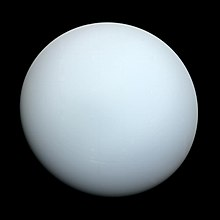

Welcome to the World of Saqlain
The Milky Way is the galaxy that includes the Solar System, with the name describing the galaxy's appearance from Earth: a hazy band of light seen in the night sky formed from stars that cannot be individually distinguished by the naked eye. The term Milky Way is a translation of the Latin via lactea, from the Greek γαλακτικὸς κύκλος (galaktikòs kýklos), meaning "milky circle". From Earth, the Milky Way appears as a band because its disk-shaped structure is viewed from within. Galileo Galilei first resolved the band of light into individual stars with his telescope in 1610. Until the early 1920s, most astronomers thought that the Milky Way contained all the stars in the Universe.[26] Following the 1920 Great Debate between the astronomers Harlow Shapley and Heber Doust Curtis,observations by Edwin Hubble showed that the Milky Way is just one of many galaxies.
The Sun's radius is about 695,000 kilometers (432,000 miles), or 109 times that of Earth. Its mass is about 330,000 times that of Earth, comprising about 99.86% of the total mass of the Solar System.[20] Roughly three-quarters of the Sun's mass consists of hydrogen (~73%); the rest is mostly helium (~25%), with much smaller quantities of heavier elements, including oxygen, carbon, neon, and iron.[21] The Sun is a G-type main-sequence star (G2V). As such, it is informally, and not completely accurately, referred to as a yellow dwarf (its light is actually white). It formed approximately 4.6 billion[a][14][22] years ago from the gravitational collapse of matter within a region of a large molecular cloud. Most of this matter gathered in the center, whereas the rest flattened into an orbiting disk that became the Solar System. The central mass became so hot and dense that it eventually initiated nuclear fusion in its core. It is thought that almost all stars form by this process
Earth is the third planet from the Sun and the only place known in the universe where life has originated and found habitability. While large volumes of water can be found throughout the Solar System, only Earth sustains liquid surface water. Approximately 70.8% of Earth's surface is made up of the ocean, dwarfing Earth's polar ice, lakes, and rivers. The remaining 29.2% of Earth's surface is land, consisting of continents and islands. Earth's surface layer is formed of several slowly moving tectonic plates, which interact to produce mountain ranges, volcanoes, and earthquakes. Earth's liquid outer core generates the magnetic field that shapes the magnetosphere of Earth, deflecting destructive solar winds.

The smallest planet in our solar system and nearest to the Sun, Mercury is only slightly larger than Earth's Moon.From the surface of Mercury, the Sun would appear more than three times as large as it does when viewed from Earth, and the sunlight would be as much as seven times brighter. Despite its proximity to the Sun, Mercury is not the hottest planet in our solar system – that title belongs to nearby Venus, thanks to its dense atmosphere. Because of Mercury's elliptical – egg-shaped – orbit, and sluggish rotation, the Sun appears to rise briefly, set, and rise again from some parts of the planet's surface. The same thing happens in reverse at sunset.

Saturn is the sixth planet from the Sun and the second-largest in the Solar System, after Jupiter. It is a gas giant with an average radius of about nine and a half times that of Earth.[23][24] It has only one-eighth the average density of Earth, but is over 95 times more massive.
Mars is the fourth planet from the Sun and the second-smallest planet in the Solar System, larger only than Mercury. In the English language, Mars is named for the Roman god of war. Mars is a terrestrial planet with a thin atmosphere and has a crust primarily composed of elements similar to Earth's crust, as well as a core made of iron and nickel. Mars has surface features such as impact craters, valleys, dunes, and polar ice caps. Mars has two small, irregularly shaped moons, Phobos and Deimos.

Mercury is the smallest planet in the Solar System and the closest to the Sun. Its orbit around the Sun takes 87.97 Earth days, the shortest of all the Sun's planets. It is named after the Roman god Mercurius (Mercury), god of commerce, messenger of the gods, and mediator between gods and mortals, corresponding to the Greek god Hermes (Ἑρμῆς). Like Venus, Mercury orbits the Sun within Earth's orbit as an inferior planet; its apparent distance from the Sun as viewed from Earth never exceeds 28°. This proximity to the Sun means the planet can only be seen near the western horizon after sunset or the eastern horizon before sunrise, usually in twilight. At this time, it may appear as a bright star-like object, but is more difficult to observe than Venus. From Earth, the planet telescopically displays the complete range of phases, similar to Venus and the Moon, which recurs over its synodic period of approximately 116 days. Due to its synodic proximity to Earth, Mercury is most often the closest planet to Earth, with Venus periodically taking this role

Venus is the second planet from the Sun. It is sometimes called Earth's "sister" or "twin" planet as it is almost as large and has a similar composition. As an interior planet to Earth, Venus (like Mercury) appears in Earth's sky never far from the Sun, either as morning star or evening star. Aside from the Sun and Moon, Venus is the brightest natural object in Earth's sky, capable of casting visible shadows on Earth in dark conditions and being visible to the naked eye in broad daylight.

Neptune is the eighth planet from the Sun and the farthest known planet in the Solar System. It is the fourth-largest planet in the Solar System by diameter, the third-most-massive planet, and the densest giant planet. It is 17 times the mass of Earth, and slightly more massive than its near-twin Uranus. Neptune is denser and physically smaller than Uranus because its greater mass causes more gravitational compression of its atmosphere. Being composed primarily of gases and liquids, it has no well-defined solid surface. The planet orbits the Sun once every 164.8 years at an average distance of 30.1 astronomical units (4.5 billion kilometres; 2.8 billion miles). It is named after the Roman god of the sea and has the astronomical symbol ♆, representing Neptune's trident.
